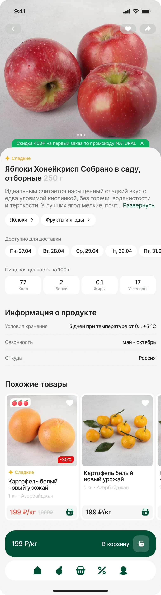
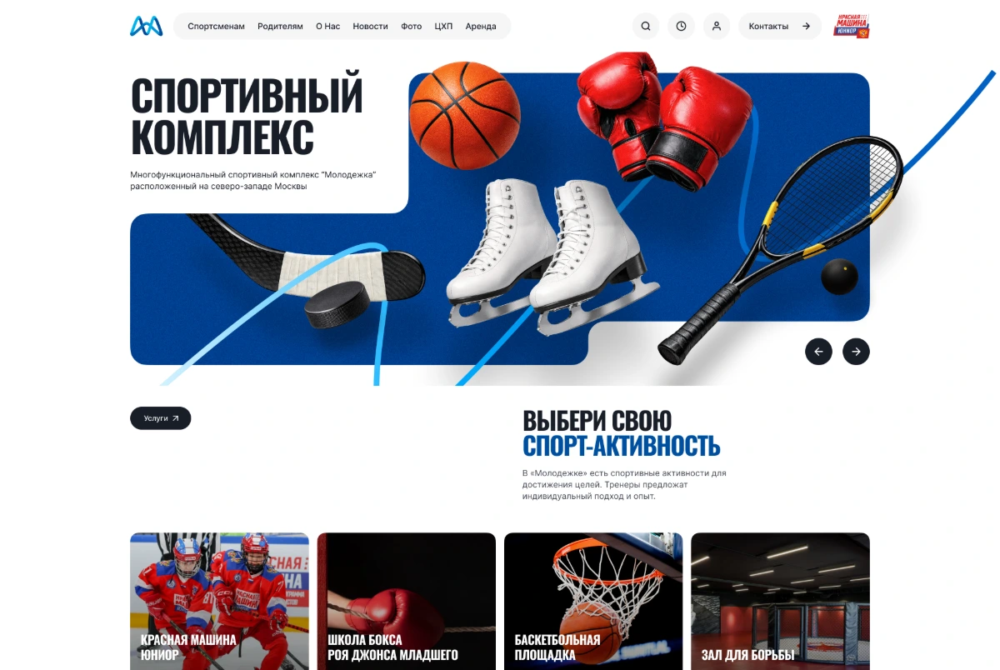
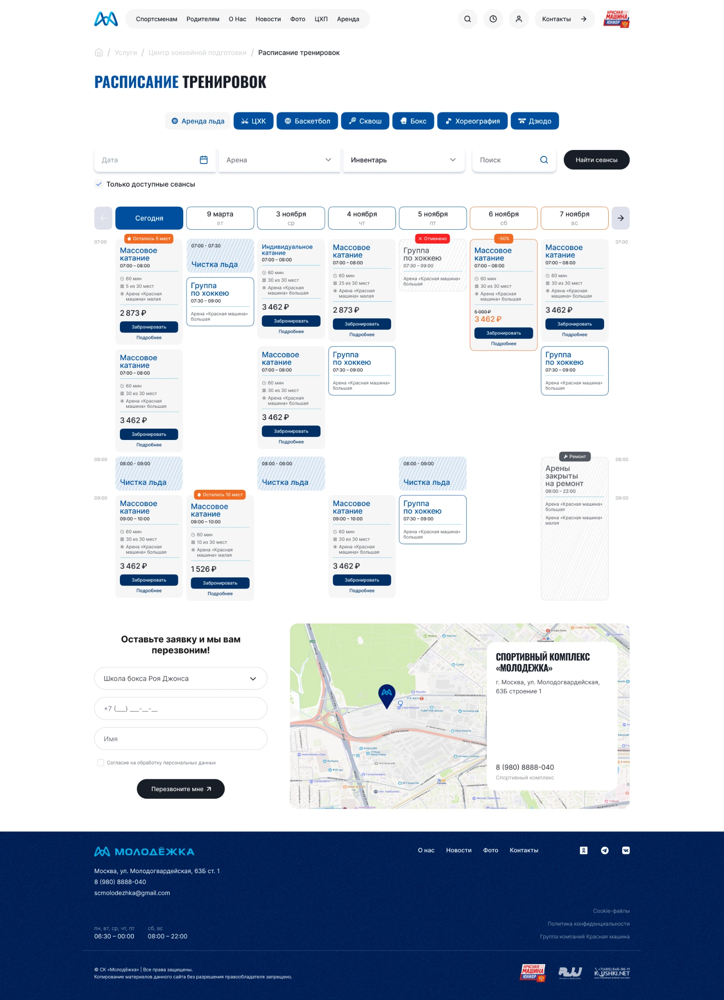
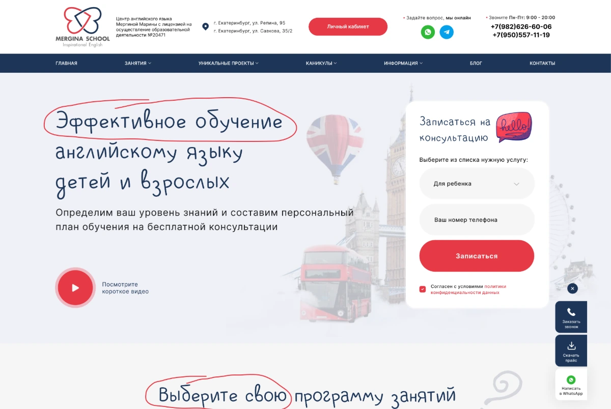

Мобильное приложение · UX/UI
ДаСезон
Сезонные и фермерские продукты — в мобильном приложении.
Дизайн с нуля на основе моего сайта: от выбора товаров до оформления заказа и повторных покупок.
Веб-дизайнер
Открыта к работе в штате · Удалённо
Разрабатываю в Figma лендинги, многостраничные сайты, интернет-магазины и мобильные интерфейсы. Прорабатываю структуру, пользовательские сценарии, визуальное оформление и адаптивные версии.
Интернет-магазины, сайты компаний и сервисы с личными кабинетами. В каждом проекте — моя работа над интерфейсом и визуальным оформлением.

Мобильное приложение · UX/UI
Сезонные и фермерские продукты — в мобильном приложении.
Дизайн с нуля на основе моего сайта: от выбора товаров до оформления заказа и повторных покупок.


Сайт · Личные кабинеты
Спортивный комплекс: от знакомства до выбора занятия.
Дизайн сайта и кабинетов клиента и менеджеров по готовым User Flow. Версии для компьютера и телефона.

Интернет-магазин · Адаптивный дизайн

Сайт бренда · Каталог продукции

Сайт сервиса · Таблицы и формы

Корпоративный сайт · Технические услуги

Сайт клуба · Спорт и танцы

Многостраничный сайт · Образование
С помощью нейросетей создаю небольшие приложения и игры. Ставлю задачи, выбираю визуальное направление и дорабатываю результат.


Веб-приложение для прогулок · Создано с помощью ИИ
Прогулки по Екатеринбургу: от выбора места по времени и настроению до открытки с впечатлениями.
Подробнее о проекте
Браузерная игра · Создано с помощью ИИ
Знакомая игра с персонажем Рози, тремя уровнями сложности и выбором фигур. Можно играть с компьютером или вдвоём на одном устройстве.
Подробнее о проектеРаботала в штате и над проектами заказчиков. Во время работы в компаниях продолжала брать отдельные заказы на фрилансе.
Май 2021 — настоящее время
Веб-дизайнер
Разрабатываю дизайн лендингов, многостраничных сайтов, интернет-магазинов и мобильных приложений. Создаю прототипы и визуальные концепции, прорабатываю пользовательские сценарии, состояния интерфейса и адаптивные версии.
Также работаю над презентациями, email-рассылками и рекламными материалами.
Смотреть проектыАвгуст 2024 — январь 2026
Веб-дизайнер
Разрабатывала дизайн сайта, отдельных страниц и адаптивных версий. Развивала и поддерживала существующую дизайн-систему продукта.
Разработала брендбук компании. Создавала презентации, email-рассылки и креативы для социальных сетей, готовила графические материалы к печати.
Апрель 2022 — август 2024
Маркетолог
Разрабатывала дизайн лендингов и промосайтов, обновляла дизайн мобильного приложения. Создавала логотипы, презентации, email-рассылки и рекламные креативы.
Работала над печатной и наружной рекламой, выставочными стендами и мерчем. Составляла контент-планы, собирала и анализировала обратную связь клиентов, подбирала каналы продвижения. Участвовала в подготовке мероприятий, выставок и конкурсов.
Лендинги, многостраничные сайты, интернет-магазины и мобильные приложения. Структура, прототипы, пользовательские сценарии, состояния интерфейса и адаптивные версии.
Развитие и поддержка существующей дизайн-системы продукта. Опыт работы — в Banxe.
Презентации, логотипы, брендбуки, email-рассылки, рекламные и печатные материалы.
Создание визуала, видео, небольших приложений и игр с помощью ИИ. Постановка задач, выбор вариантов и доработка результата.
Начинаю с брифа и исходных материалов. Подбираю референсы, прорабатываю структуру или опираюсь на предоставленную.
Создаю черновой макет и передаю на согласование, чтобы обсудить направление работы.
По обратной связи корректирую макет и довожу до согласованного варианта.
Адаптирую дизайн под разные размеры экранов и передаю готовые макеты заказчику.
Ищу постоянную удалённую работу в команде. Если вам нужен дизайнер сайтов и интерфейсов, напишите мне — обсудим задачи и мой опыт.
Посмотреть резюме